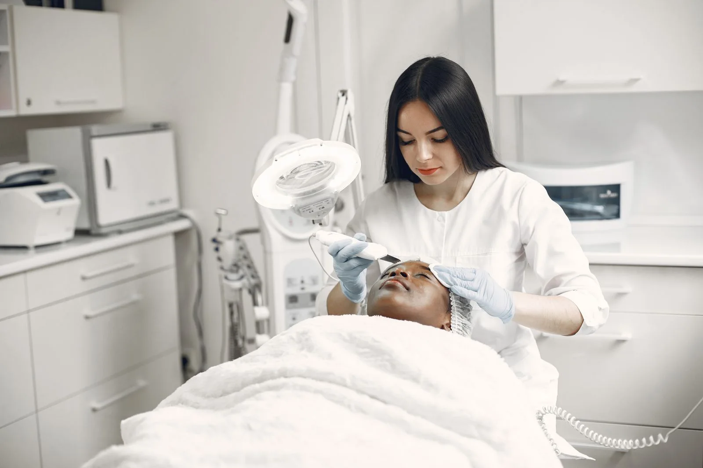
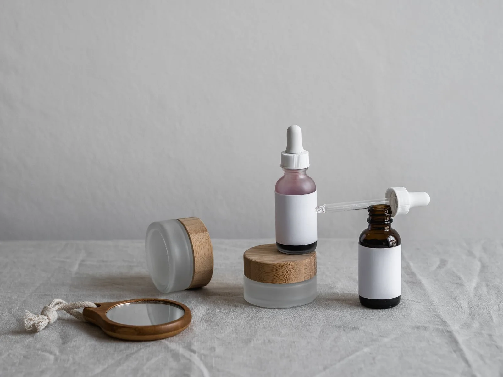

Három irány,
egy Eliza.
Ugyanaz a gondoskodás, három különböző megjelenés. Nézd meg a teljes oldalakat, és válaszd ki, melyik áll hozzád a legközelebb.

1. koncepció
Csendes énidő
Nagy, teljes szélességű szalonhangulat-fotó alatt balra rendezett cím és rövid bevezető. Bőséges krém tér, hosszú képsávok és külön megjelenő vendégidézetek.
Megnézem a változatot ↗
2. koncepció
Személyes törődés
Aszimmetrikus, osztott nyitóképernyő: balra nagy cím, jobbra közeli kezelési fotó. Váltakozó kép–szöveg szakaszok, púder felületek és személyes hangú bemutatkozás.
Megnézem a változatot ↗
3. koncepció
Bőrtudatos műhely
Középre rendezett, tipográfiára épülő nyitás, alatta három eltérő képkivágás. Kompaktabb kezelési áttekintés, jól tagolt folyamat és kakaó hátterű garanciaszakasz.
Megnézem a változatot ↗